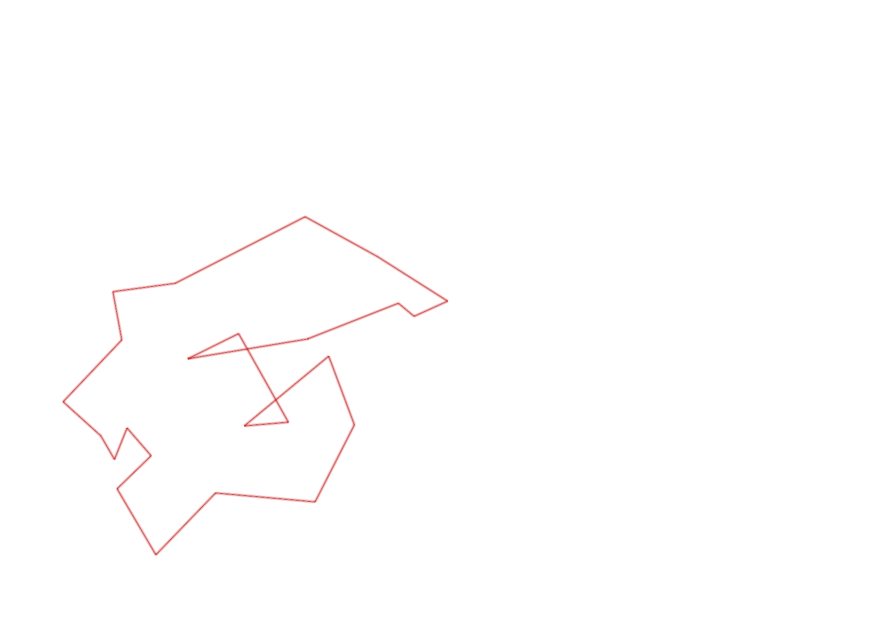
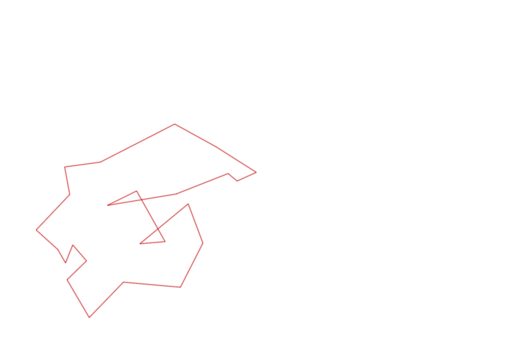

| Control |
Points |
Time Punched |
Distance |
Your Time |
Pace |
Place |
Fastest Time |
Median Time |
% Behind Fastest |
| 92 |
90 |
|
0.23 |
0:02:39 |
11:31 |
7 / 11 |
0:02:15 |
0:02:35 |
17% |
| 35 |
30 |
|
0.05 |
0:01:46 |
35:20 |
3 / 12 |
0:01:31 |
0:01:55 |
16% |
| 47 |
40 |
|
0.09 |
0:01:45 |
19:26 |
8 / 11 |
0:00:54 |
0:01:31 |
94% |
| 57 |
50 |
|
0.2 |
0:06:19 |
31:35 |
7 / 7 |
0:03:52 |
0:04:28 |
63% |
| 107 |
100 |
|
0.2 |
0:03:46 |
18:50 |
20 / 21 |
0:00:00 |
0:02:52 |
-% |
| 63 |
60 |
|
0.35 |
0:03:33 |
10:08 |
13 / 18 |
0:01:59 |
0:02:42 |
78% |
| 32 |
30 |
|
0.15 |
0:01:08 |
07:33 |
17 / 27 |
0:00:36 |
0:00:56 |
88% |
| 44 |
40 |
|
0.12 |
0:02:23 |
19:51 |
24 / 29 |
0:00:52 |
0:01:49 |
175% |
| 53 |
50 |
|
0.2 |
0:02:17 |
11:25 |
14 / 26 |
0:01:31 |
0:02:15 |
50% |
| 69 |
60 |
|
0.12 |
0:01:18 |
10:50 |
14 / 29 |
0:00:45 |
0:01:18 |
73% |
| 71 |
70 |
|
0.06 |
0:01:15 |
20:50 |
14 / 25 |
0:00:48 |
0:01:13 |
56% |
| 54 |
50 |
|
0.08 |
0:00:44 |
09:10 |
16 / 33 |
0:00:27 |
0:00:45 |
62% |
| 41 |
40 |
|
0.09 |
0:01:57 |
21:40 |
11 / 13 |
0:01:01 |
0:01:43 |
91% |
| 40 |
40 |
|
0.11 |
0:01:04 |
09:41 |
15 / 24 |
0:00:45 |
0:01:00 |
42% |
| 77 |
70 |
|
0.18 |
0:02:59 |
16:34 |
18 / 21 |
0:01:35 |
0:02:21 |
88% |
| 59 |
50 |
|
0.21 |
0:03:25 |
16:16 |
14 / 18 |
0:02:00 |
0:02:47 |
70% |
| 61 |
60 |
|
0.24 |
0:03:15 |
13:32 |
9 / 19 |
0:02:14 |
0:03:16 |
45% |
| 42 |
40 |
|
0.21 |
0:04:41 |
22:18 |
11 / 14 |
0:02:19 |
0:03:34 |
102% |
| 127 |
20 |
|
0.17 |
0:01:46 |
10:23 |
5 / 12 |
0:01:27 |
0:01:48 |
21% |
| 60 |
60 |
|
0.26 |
0:02:39 |
10:11 |
1 / 2 |
0:02:39 |
0:02:54 |
0% |
| 38 |
30 |
|
0.11 |
0:01:10 |
10:36 |
5 / 15 |
0:00:00 |
0:01:15 |
-% |
| 126 |
20 |
|
0.24 |
0:02:16 |
09:26 |
1 / 3 |
0:02:16 |
0:02:17 |
0% |
| 130 |
30 |
|
0.14 |
0:00:44 |
05:14 |
14 / 19 |
0:00:00 |
0:00:33 |
-% |
| Finish |
0 |
|
0.29 |
0:01:38 |
05:37 |
1 / 4 |
0:01:38 |
0:02:01 |
0% |
Total Distance Covered: 4.1km
Points Scored: 1130
Late Penalty: 0
Final Score: 1130
Total Time: 0hours 56minutes 27seconds
Efficiency: 275.61 points/km
 
